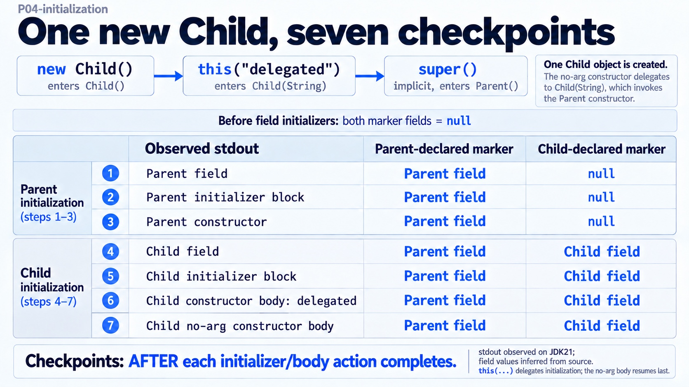

객체 생성 · P04
new Child()는 어떤 순서로 필드를 준비할까?
원문 §3 · 순수 Java 예제 · JDK 21 실행 증거 · CreationDemo
부모 필드 대입 완료
new Child()는 this("delegated")로 위임하고 부모 초기화부터 진행합니다. mark가 출력·반환한 다음 Parent.marker에 반환값을 대입했습니다.

지금의 값과 연결
현재 읽는 코드
여기까지의 출력
각 필드 초기화·블록·본문 동작 완료 뒤의 스냅샷입니다. mark는 println → return → 필드 대입 순서이므로 출력 발생 순간의 필드 값과 구분합니다. Parent.marker와 Child.marker는 한 Child 객체 안에 따로 있는 private 필드입니다.
추가 실험 전체 코드 · 원문과 구분
아래 코드는 이 화면을 확인한 추가 실험입니다. Spring 실험은 원문의 Java 소스 파일4개를 함께 컴파일하고 Bean3개를 명시 등록했습니다. Boot·HTTP·JPA·Java25를 실행한 결과는 아닙니다.
P04StateProof.java · 원문 Order·Builder·SignupRequest의 추가 입력 검사
public class P04StateProof {
private static int checks;
private static void check(boolean condition, String label) {
if (!condition) throw new AssertionError(label);
checks++;
System.out.println(label);
}
private static void rejected(Runnable action, String message) {
try { action.run(); throw new AssertionError("예외가 필요함: " + message); }
catch (IllegalArgumentException e) { check(message.equals(e.getMessage()), "거부: " + message); }
}
public static void main(String[] args) {
check(Order.of("ORD-1", 2).toString().equals("ORD-1 x 2 tags=[]"), "factory: ORD-1, 2, 빈 tags");
Order.Builder builder = Order.builder();
check(builder.id("ORD-2") == builder, "id 설정은 같은 Builder 반환");
check(builder.quantity(3) == builder, "quantity 설정은 같은 Builder 반환");
check(builder.tag("gift") == builder, "tag 추가는 같은 Builder 반환");
Order first = builder.build();
check(first.toString().equals("ORD-2 x 3 tags=[gift]"), "build: 검증된 Order 반환");
builder.tag("late");
check(first.toString().equals("ORD-2 x 3 tags=[gift]"), "추가 예시: Builder 목록 변경 뒤 기존 Order tags 유지");
Order next = builder.build();
check(next.toString().equals("ORD-2 x 3 tags=[gift, late]"), "추가 예시: 다시 build한 Order는 현재 Builder 목록 사용");
rejected(() -> Order.builder().build(), "id is required");
rejected(() -> Order.builder().id("ORD-X").build(), "quantity must be positive");
rejected(() -> Order.of(" ", 2), "id is required");
rejected(() -> Order.of("ORD-X", 0), "quantity must be positive");
SignupRequest request = new SignupRequest(" user@example.com ", " Mina ");
check(request.email().equals("user@example.com"), "record: trim한 email이 필드에 저장됨");
check(request.displayName().equals("Mina"), "추가 예시: trim한 displayName이 필드에 저장됨");
rejected(() -> new SignupRequest("bad", "Mina"), "email is invalid");
rejected(() -> new SignupRequest("user@example.com", " "), "displayName is required");
check(checks == 15, "총 상태 확인 15개");
}
}
P04ConstructorProof.java · 생성자에서 override 호출 시점을 관찰한 독립 예시
public class P04ConstructorProof {
static boolean invoked;
static int calls;
static String seenDuringParent;
static class Parent {
Parent() { inspect(); }
void inspect() {}
}
static class Child extends Parent {
String label = "ready";
@Override void inspect() {
invoked = true;
calls++;
seenDuringParent = label;
}
}
public static void main(String[] args) {
Child child = new Child();
if (!invoked || calls != 1) throw new AssertionError("override 호출 확인");
if (seenDuringParent != null) throw new AssertionError("자식 초기화 전에는 null");
if (!child.label.equals("ready")) throw new AssertionError("자식 초기화 뒤 ready");
System.out.println("parent constructor called child override: true");
System.out.println("child label during parent constructor: null");
System.out.println("child label after construction: ready");
}
}
P04LombokProof.java · Lombok 1.18.46 · JDK21의 생성 코드와 결과 검사
import lombok.AllArgsConstructor;
import lombok.Builder;
import lombok.NoArgsConstructor;
import lombok.NonNull;
import lombok.RequiredArgsConstructor;
public class P04LombokProof {
static class Gateway {}
@RequiredArgsConstructor @AllArgsConstructor
static class Fields {
final Gateway gateway;
@NonNull String name;
int retries;
final int fixed = 20;
static int shared;
}
@Builder static class PlainConfig { int limit = 20; }
@Builder static class DefaultConfig { @Builder.Default int limit = 20; }
@NoArgsConstructor(force = true)
static class Forced { @NonNull final String name; final int retries; }
static class Targeted {
final String name;
@Builder Targeted(String name) {
if (name == null) throw new IllegalArgumentException("name is required");
this.name = name;
}
}
static int checks;
static void check(boolean ok, String label) {
if (!ok) throw new AssertionError(label);
checks++;
System.out.println(label);
}
public static void main(String[] args) throws Exception {
check(Fields.class.getDeclaredConstructor(Gateway.class, String.class) != null, "Required: 미초기화 final과 NonNull 두 인자");
check(Fields.class.getDeclaredConstructor(Gateway.class, String.class, int.class) != null, "AllArgs: retries도 포함, 초기화 final과 static은 제외");
Fields nullable = new Fields(null, "Mina");
check(nullable.gateway == null, "final만으로 null 인자를 거부하지 않음");
boolean rejected = false;
try { new Fields(new Gateway(), null); } catch (NullPointerException expected) { rejected = true; }
check(rejected, "NonNull 이름은 생성자에서 null 거부");
Fields all = new Fields(new Gateway(), "Mina", 3);
check(all.retries == 3 && all.fixed == 20, "AllArgs 입력과 선언된 final 기본값 유지");
check(PlainConfig.builder().build().limit == 0, "Builder: Default 없는 선언 초기값20은 builder 기본값이 아님");
check(DefaultConfig.builder().build().limit == 20, "Builder.Default: 생략 입력은20");
check(DefaultConfig.builder().limit(7).build().limit == 7, "Builder.Default: 명시 입력7 우선");
Forced forced = new Forced();
check(forced.name == null, "NoArgs force: NonNull final도 null 가능");
check(forced.retries == 0, "NoArgs force: final int는0");
check(Targeted.builder().name("Mina").build().name.equals("Mina"), "생성자 대상 Builder가 실제 검증 경로 사용");
rejected = false;
try { Targeted.builder().build(); } catch (IllegalArgumentException expected) { rejected = true; }
check(rejected, "생성자 대상 Builder: 빠진 필수 이름 거부");
System.out.println("checks=" + checks);
}
}
spring/P04SpringProof.java · Spring 7.0.9 독립 컨텍스트 · Bean3개·직접 메서드 호출 검사
package com.example.orders;
import java.util.UUID;
import org.springframework.context.annotation.AnnotationConfigApplicationContext;
import org.springframework.beans.BeansException;
import org.springframework.beans.factory.NoSuchBeanDefinitionException;
public class P04SpringProof {
private static int checks;
private static void check(boolean ok, String label) {
if (!ok) throw new AssertionError(label);
checks++;
System.out.println(label);
}
public static void main(String[] args) throws Exception {
try (var context = new AnnotationConfigApplicationContext()) {
context.register(OrderIdGenerator.class, OrderService.class, OrderController.class);
context.refresh();
OrderIdGenerator generator = context.getBean(OrderIdGenerator.class);
OrderService service = context.getBean(OrderService.class);
OrderController controller = context.getBean(OrderController.class);
var generatorField = OrderService.class.getDeclaredField("idGenerator");
generatorField.setAccessible(true);
check(generatorField.get(service) == generator, "Lombok 단일 생성자: 컨텍스트의 같은 generator 주입");
var serviceField = OrderController.class.getDeclaredField("service");
serviceField.setAccessible(true);
check(serviceField.get(controller) == service, "명시한 단일 생성자: 컨텍스트의 같은 service 주입");
check(OrderService.class.getDeclaredConstructors().length == 1, "OrderService 생성자 한 개");
OrderResponse response = controller.create(new OrderRequest(" Mina ", 2));
check(response.customerName().equals("Mina"), "Java 메서드 직접 호출: 정규화한 Mina 반환");
check(response.quantity() == 2, "Java 메서드 직접 호출: 수량2 반환");
check(UUID.fromString(response.id()) != null, "Java 메서드 직접 호출: 생성된 id는 유효 UUID");
boolean invalid = false;
try { new OrderRequest("Mina", 0); } catch (IllegalArgumentException expected) { invalid = true; }
check(invalid, "수량0은 record 생성자에서 거부");
invalid = false;
try { new OrderRequest(" ", 2); } catch (IllegalArgumentException expected) { invalid = true; }
check(invalid, "공백 이름은 record 생성자에서 거부");
}
boolean missing = false;
try (var context = new AnnotationConfigApplicationContext()) {
context.register(OrderService.class);
try { context.refresh(); }
catch (BeansException expected) {
for (Throwable cause = expected; cause != null; cause = cause.getCause()) {
if (cause instanceof NoSuchBeanDefinitionException) missing = true;
}
}
}
check(missing, "generator Bean 누락은 Service 생성 실패");
System.out.println("checks=" + checks);
}
}
P04. 객체 생성
원문 전체 · 긴 코드·심화·자가점검·참고문헌
P04. 객체 생성 — 생성자·정적 팩토리·Builder 패턴·생성자 주입
Practical backend · P04
이 문서에서 볼 내용
Spring·DB를 직접 구현하는 실습
생성자는 객체가 반드시 지켜야 할 상태를 처음부터 완성한다. 선택 값이 늘어나면 의미 있는 정적 팩토리나 Builder로 호출 코드를 읽기 쉽게 만든다. Spring 서비스의 의존성은
private final생성자 주입으로 받고, JPA Entity의 생성 관례는 별도로 지킨다.
011. 한 줄로 말하면
생성자는 new가 객체를 만들 때 필드를 준비하고 불변식을 확인하는 진입점이다. 정적 팩토리와 Builder는 생성자를 대체하는 문법이 아니라, 객체 생성 의도를 이름이나 단계별 설정으로 표현하는 API 설계 방식이다. 생성자 주입은 객체가 협력에 필요한 의존성을 외부에서 받아 완성되게 한다.
필드가 초기화되지 않은 객체가 서비스에 들어오거나, new Order(null, 2, null)처럼 호출만 보고 뜻을 알 수 없는 코드가 퍼지면 장애가 난다. Spring Bean은 필요한 의존성 없이 만들어질 수 없게 생성 시점에 구조를 잡아야 한다. 그래서 객체마다 “필수 상태는 어디서 확인할지”와 “선택 값은 어떻게 표현할지”를 구분한다.
022. 당장 알아야 할 것
기본 생성자는 직접 생성자를 하나도 쓰지 않았을 때만 생긴다. 매개변수 생성자를 추가하면
new User()호출은 깨지므로 필요한 경우 명시한다. 여러 생성자 간 중복 초기화는this(...)로 한 경로에 모은다.class User { User(String name) { /* 검증 */ } User() { this("guest"); } }초기화 순서는 부모 필드·초기화 블록·부모 본문 다음 자식 필드·블록·자식 본문이다. 자식 초기화가 끝나기 전에 재정의 메서드가 실행될 수 있으므로 생성자에서 오버라이드 가능한 메서드를 호출하지 않는다. Java 25(JEP 513)는
super(...)전 제한된 인자 검증도 허용한다.불변 객체는
final필드와 방어 복사를 함께 쓴다.final List는 리스트 변경까지 막지 않는다.this.tags = List.copyOf(tags);호출 의도가 여러 개면 정적 팩토리에 이름을 붙인다.
of는 구성 값으로,from은 변환 입력으로 만드는 관례다. 캐시나 하위 타입 반환도 생성자보다 감추기 쉽다. 단, 명명 규칙은 관례이므로 일관되게 정한다.선택 값이 많으면 Builder를 쓰고
build()에서 필수값을 검증한다. 위치만으로 값 의미를 맞혀야 하는 telescoping 생성자와new Config(host, 8080, true, null)을 피한다. 필수값이 적으면 생성자나 factory가 더 단순하다.Config.builder().host("localhost").port(8080).build();Lombok
@Builder는 필드 기본값과 기존 생성자를 점검한다. 필드 초기값을 builder에 쓰려면@Builder.Default를 붙인다. 클래스 수준@Builder는 전체 인자를 만드는 API에 맞추므로 생성자를 직접 선언했다면 실제 생성 대상 constructor에@Builder를 붙이는 편이 분명하다.Lombok 생성자 애노테이션은 포함 필드가 서로 다르다.
@RequiredArgsConstructor는 초기화 안 된final및@NonNull,@AllArgsConstructor는 모든 필드,@NoArgsConstructor는 무인자 생성자를 만든다.force=true는 final 필드를 null/0/false로 둘 수 있으나 유효한 상태를 보장하지 않는다.Spring Bean은 생성자 주입, DTO와 Entity는 각 용도에 맞는 생성 규칙을 쓴다. 필수 의존성을
private final로 선언하고@RequiredArgsConstructor를 쓰거나 단일 생성자를 직접 작성한다. 생성자가 하나면 Framework 4.3+에서@Autowired는 생략된다. 요청·응답은 record를 우선 고려하고, JPA Entity는 public/protected 무인자 생성자와 도메인 검증 메서드를 둔다.@Service @RequiredArgsConstructor class PaymentService { private final PaymentGateway gateway; }
033. 따라 하기1단계: Boot 프로젝트 의존성 · 2단계: 생성 입력과 주입할 Bean을 만든다 · 3단계: 단일 생성자 Controller로 API를 연다 · 4단계: 생성자 위임·factory·Builder 출력을 확인한다
Java 25, Spring Boot 4.1.1 / Framework 7.0.9, Lombok 1.18.46 기준의 작은 주문 API를 만든다. 순수 Java는 아래 전체 코드를 JDK 21에서 실행했다. Spring 코드는 이 작업 폴더에 Boot 프로젝트가 없어 미실행이다.
011단계: Boot 프로젝트 의존성
Spring Initializr에서 Boot 4.1.1, Java 25, Gradle Kotlin, Spring Web MVC와 Lombok을 고른다. 기존 프로젝트의 build.gradle.kts에는 다음 설정이 필요하다.
plugins {
java
id("org.springframework.boot") version "4.1.1"
id("io.spring.dependency-management") version "1.1.7"
}
java { toolchain { languageVersion = JavaLanguageVersion.of(25) } }
dependencies {
implementation("org.springframework.boot:spring-boot-starter-webmvc")
compileOnly("org.projectlombok:lombok")
annotationProcessor("org.projectlombok:lombok")
}Maven은 Boot BOM과 spring-boot-starter-webmvc, lombok 의존성 및 annotation processor 설정을 추가한다. 확인: ./gradlew dependencies --configuration compileClasspath 또는 ./mvnw dependency:tree로 두 의존성이 들어왔는지 본다.
022단계: 생성 입력과 주입할 Bean을 만든다
src/main/java/com/example/orders/OrdersApplication.java:
package com.example.orders;
import org.springframework.boot.SpringApplication;
import org.springframework.boot.autoconfigure.SpringBootApplication;
@SpringBootApplication
public class OrdersApplication {
public static void main(String[] args) { SpringApplication.run(OrdersApplication.class, args); }
}OrderRequest.java:
package com.example.orders;
public record OrderRequest(String customerName, int quantity) {
public OrderRequest {
customerName = customerName == null ? "" : customerName.trim();
if (customerName.isBlank() || quantity < 1) throw new IllegalArgumentException("invalid order");
}
}OrderIdGenerator.java:
package com.example.orders;
import java.util.UUID;
import org.springframework.stereotype.Component;
@Component
class OrderIdGenerator { String next() { return UUID.randomUUID().toString(); } }OrderService.java:
package com.example.orders;
import lombok.RequiredArgsConstructor;
import org.springframework.stereotype.Service;
@Service
@RequiredArgsConstructor
class OrderService {
private final OrderIdGenerator idGenerator;
OrderResponse create(OrderRequest request) {
return new OrderResponse(idGenerator.next(), request.customerName(), request.quantity());
}
}Lombok은 생성자를 만들고 Spring은 유일한 생성자로 OrderIdGenerator를 전달한다. 확인: ./gradlew compileJava (Maven: ./mvnw compile)가 성공하고 IDE에서 생성자 인자에 해당 필드가 표시돼야 한다.
033단계: 단일 생성자 Controller로 API를 연다
OrderController.java:
package com.example.orders;
import org.springframework.web.bind.annotation.*;
@RestController
@RequestMapping("/orders")
class OrderController {
private final OrderService service;
OrderController(OrderService service) { this.service = service; }
@PostMapping OrderResponse create(@RequestBody OrderRequest request) { return service.create(request); }
}
record OrderResponse(String id, String customerName, int quantity) {}확인: (Spring 미실행) ./gradlew bootRun 후 다음 요청은 id, customerName, quantity를 담은 JSON을 반환한다. Maven 실행은 ./mvnw spring-boot:run이다.
curl -i -X POST http://localhost:8080/orders \
-H 'Content-Type: application/json' \
-d '{"customerName":"Mina","quantity":2}'수량을 0으로 보내면 record 생성 검증에서 예외가 난다. 실제 API는 @RestControllerAdvice 등으로 이 예외를 적절한 4xx 응답으로 매핑한다.
044단계: 생성자 위임·factory·Builder 출력을 확인한다
_scratch/P04/CreationDemo.java 전체 코드:
import java.util.List;
public class CreationDemo {
public static void main(String[] args) {
new Child();
System.out.println(Order.of("ORD-1", 2));
System.out.println(Order.builder().id("ORD-2").quantity(3).tag("gift").build());
}
}
class Parent {
private String marker = mark("Parent field");
{ System.out.println("Parent initializer block"); }
Parent() { System.out.println("Parent constructor"); }
static String mark(String s) { System.out.println(s); return s; }
}
class Child extends Parent {
private String marker = Parent.mark("Child field");
{ System.out.println("Child initializer block"); }
Child() { this("delegated"); System.out.println("Child no-arg constructor body"); }
Child(String value) { System.out.println("Child constructor body: " + value); }
}
final class Order {
private final String id; private final int quantity; private final List<String> tags;
private Order(String id, int quantity, List<String> tags) {
if (id == null || id.isBlank()) throw new IllegalArgumentException("id is required");
if (quantity < 1) throw new IllegalArgumentException("quantity must be positive");
this.id = id; this.quantity = quantity; this.tags = List.copyOf(tags);
}
static Order of(String id, int quantity) { return new Order(id, quantity, List.of()); }
static Builder builder() { return new Builder(); }
public String toString() { return id + " x " + quantity + " tags=" + tags; }
static final class Builder {
private String id; private int quantity; private List<String> tags = new java.util.ArrayList<>();
Builder id(String value) { id = value; return this; }
Builder quantity(int value) { quantity = value; return this; }
Builder tag(String value) { tags.add(value); return this; }
Order build() { return new Order(id, quantity, tags); }
}
}실행 명령은 java _scratch/P04/CreationDemo.java다. 실제 출력:
Parent field
Parent initializer block
Parent constructor
Child field
Child initializer block
Child constructor body: delegated
Child no-arg constructor body
ORD-1 x 2 tags=[]
ORD-2 x 3 tags=[gift]055단계: record compact constructor를 실행한다
_scratch/P04/RequestDemo.java:
public class RequestDemo {
public static void main(String[] args) {
System.out.println(new SignupRequest(" user@example.com ", "Mina"));
try { new SignupRequest("bad", "Mina"); }
catch (IllegalArgumentException e) { System.out.println(e.getMessage()); }
}
}
record SignupRequest(String email, String displayName) {
SignupRequest {
email = email == null ? "" : email.trim();
displayName = displayName == null ? "" : displayName.trim();
if (!email.contains("@")) throw new IllegalArgumentException("email is invalid");
if (displayName.isBlank()) throw new IllegalArgumentException("displayName is required");
}
}같은 JDK 21 경로에서 java _scratch/P04/RequestDemo.java로 실행한 실제 출력:
SignupRequest[email=user@example.com, displayName=Mina]
email is invalidCompact constructor는 Java 16부터 정식 기능이다(JEP 395). 매개변수 값을 바꾸면 마지막에 그 값이 record 필드에 복사된다.
044. 치트시트
| 이름 | 용도 | 예시 | 주의 |
|---|---|---|---|
| 생성자 | 필수 상태 구성 | new User(name) |
다른 생성자를 선언하면 무인자 생성자는 사라짐 |
| 정적 팩토리 | 이름 있는 생성 | Money.of(10, KRW) |
of/from은 관례 |
| Builder | 선택 값 다수 조립 | Config.builder().port(8080).build() |
build()에서 필수값 검증 |
Lombok @Builder.Default |
Builder 기본값 | @Builder.Default int size = 20; |
선언 초기값만 두면 builder는 반영 안 함 |
@RequiredArgsConstructor |
필수 필드 생성자 | Spring Bean의 final 의존성 |
초기화된 필드는 제외 |
@AllArgsConstructor |
전 필드 생성자 | 제한적 fixture | 필드 추가가 호출 규약을 바꿈 |
@NoArgsConstructor |
무인자 생성 | Entity protected 생성자 |
final 필드와 force 옵션 유의 |
| record compact constructor | DTO 검증 | Request { name = name.trim(); } |
필드 직접 대입 불가 |
| Spring 생성자 주입 | Bean 의존성 | private final Gateway |
복수 후보는 @Qualifier로 좁힘 |
기본 추천: 단순 필수값은 생성자, 생성 의도가 여러 개면 factory, 선택값이 많으면 Builder, Spring 의존성은 생성자 주입, 전달 DTO는 record부터 시작한다.
055. 자주 나는 에러와 해결
constructor User ... cannot be applied to given types; required: String; found: no arguments→ 인자 생성자를 선언해 기본 생성자가 사라졌다. → 무인자 객체가 진짜 필요한지 확인하고, 필요하면User() { this("guest"); }를 명시한다.variable name might not have been initialized→ 어떤 생성 경로에서 final 필드를 대입하지 않았다. → 공통 생성자에this(...)로 위임해 모든 경로를 검증한다.- Builder 결과에서 선언한 기본값이 0/null이다 → Builder가 일반 필드 초기화 값을 사용하지 않았다. → Lombok은
@Builder.Default, 수동 Builder는 builder 필드 기본값 또는build()의 기본값을 정한다. @NoArgsConstructor와 final 필드가 충돌하거나 값이 null이다 → 무인자 생성자로 유효값을 채울 수 없다. → Entity 같은 프레임워크 지점만protected무인자 생성자를 두고,force=true로 불변식을 우회하지 않는다.- JPA가 Entity 무인자 생성자를 찾지 못한다 → public/protected 접근 가능한 생성자가 없다. →
protected Entity() {}또는@NoArgsConstructor(access = AccessLevel.PROTECTED)를 선언한다.
066. 한 단계 더
객체를 만든 뒤 검증하려고 하면 유효하지 않은 객체가 이미 다른 코드로 흘러들어간다. 생성자와 팩토리를 좁은 생성 경로로 두면 상태 불변식을 한 지점에 모을 수 있다. Builder는 객체가 복잡해져 선택 항목의 의미가 호출부를 압도할 때 읽기성을 준다.
대신 build()까지 검증을 미루므로 미완성 Builder는 유효한 객체와 구분해야 한다. Lombok은 코드를 줄여도 실제 생성자 규칙을 바꾸지 않으며, 생성된 멤버가 애노테이션 처리로 컴파일된다는 점을 기억한다.
생성 문법도 발전했다. record는 Java 14·15 preview를 거쳐 Java 16에서 정식화됐다(JEP 395). Java 22~24 preview를 거친 생성자 전처리 구문은 Java 25에서 정식화돼 super(...) 전 인자 검증 같은 코드를 허용한다(JEP 513).
Spring 주입은 Bean 생명주기나 프록시를 설명하지 않는다(→ S01 참조). equals·hashCode 규약은 → J02, record 문법과 다른 최신 Java 문법은 → J05를 참조한다.
077. 자가점검 Q&A (면접 대비)
Q1. 기본 생성자는 언제 제공되고 this(...)는 어떤 역할을 하나?
생성자를 하나도 선언하지 않은 클래스에만 기본 무인자 생성자가 생긴다. this(...)는 오버로드 사이에서 공통 검증과 대입을 공유한다. 부모 초기화는 super(...)가 맡는다.
꼬리질문: Java 25에서 달라진 점은? → JEP 513으로 객체를 참조하지 않는 제한된 전처리 구문을 super(...) 앞에 둘 수 있다.
Q2. 정적 팩토리와 Builder를 언제 고르는가?
of·from처럼 생성 의미가 여러 개면 팩토리 이름이 의도를 드러낸다. 선택 값이 많으면 Builder가 인자 순서 혼란을 줄인다. 필수값이 적고 경로가 하나면 생성자가 간단하다.
꼬리질문: Builder가 필수값을 컴파일 시점에 보장하는가? → 일반 Builder는 아니다. build()에서 필수값을 검사해야 한다.
Q3. final 필드를 사용하면 객체는 불변인가?
필드 재대입만 막는다. 필드가 가리키는 List나 배열의 변경은 별개다. 입력 컬렉션을 복사하고 내부 변경 가능한 참조를 반환하지 않아야 한다.
꼬리질문: List.copyOf는 요소까지 복사하는가? → 아니다. 컬렉션 구조가 불변인 얕은 복사라 가변 요소의 내부 상태는 바뀔 수 있다.
Q4. Spring에서 필드 주입 대신 생성자 주입을 쓰는 이유는?
필수 의존성이 시그니처에 나타나고 final 필드로 누락을 막는다. 테스트에서 컨테이너 없이 가짜 협력자를 넣을 수 있다. 단일 생성자라면 @Autowired가 필요 없다.
꼬리질문: 생성자 매개변수가 지나치게 많다면? → 주입 방식을 바꾸기 전에 Bean의 책임을 나눈다.
Q5. @RequiredArgsConstructor와 @AllArgsConstructor 차이는?
전자는 초기화하지 않은 final 및 @NonNull 필드만 받는다. 후자는 모든 필드를 매개변수로 받는다. @NoArgsConstructor는 무인자이며 final 필드가 있으면 생성 가능 여부와 강제 초기화의 유효성을 살핀다.
꼬리질문: 필드 선언 시 기본값이 있는 final 필드는? → 이미 초기화됐으므로 required constructor 인자에서 빠진다.
Q6. API DTO와 JPA Entity의 생성 관례가 왜 다른가?
전달 전용 데이터는 record와 compact constructor 검증이 간결하다. Entity는 영속성 공급자가 접근할 public/protected 무인자 생성자가 필요하고, 유효성은 도메인 메서드로 통제한다. 요청 데이터를 Entity에 바로 바인딩하지 않는다.
꼬리질문: record는 Java 몇 버전부터 정식 기능인가? → Java 16, JEP 395다.
088. 참고문헌
- The Java Language Specification, Java SE 25, Chapter 8 — https://docs.oracle.com/javase/specs/jls/se25/html/jls-8.html — 생성자와 record 규칙.
- JEP 395: Records — https://openjdk.org/jeps/395 — record의 Java 16 정식화 이력.
- JEP 513: Flexible Constructor Bodies — https://openjdk.org/jeps/513 — Java 25 생성자 전처리 구문의 근거.
@Builder— https://projectlombok.org/features/Builder — Builder와@Builder.Default규칙.- Lombok constructor annotations — https://projectlombok.org/features/constructor — Lombok 생성자별 매개변수와 force 주의.
- Dependency Injection — https://docs.spring.io/spring-framework/reference/core/beans/dependencies/factory-collaborators.html — 생성자 인자로 협력자를 주입하는 원칙.
- Using
@Autowired— https://docs.spring.io/spring-framework/reference/core/beans/annotation-config/autowired.html — 단일 생성자의@Autowired생략 규칙. - New Features and Enhancements in Spring Framework 4.3 — https://docs.spring.io/spring-framework/docs/4.3.x/spring-framework-reference/html/new-in-4.3.html — 단일 생성자 규칙이 추가된 시점.
- Jakarta Persistence 3.2 Specification — https://jakarta.ee/specifications/persistence/3.2/jakarta-persistence-spec-3.2 — Entity 생성 규칙.